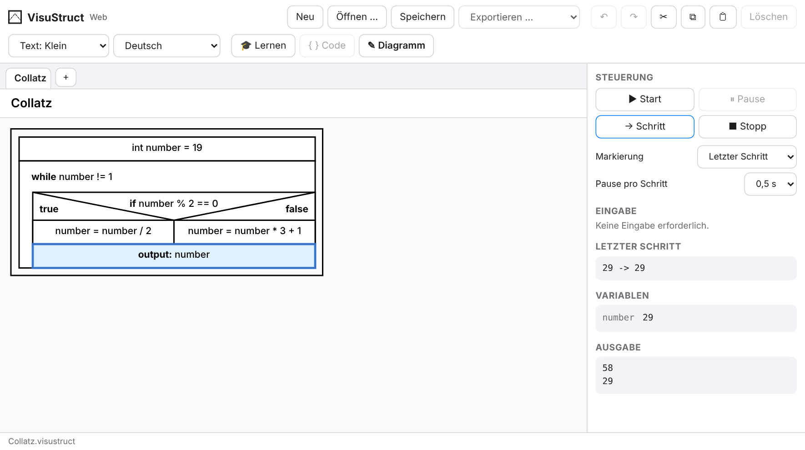
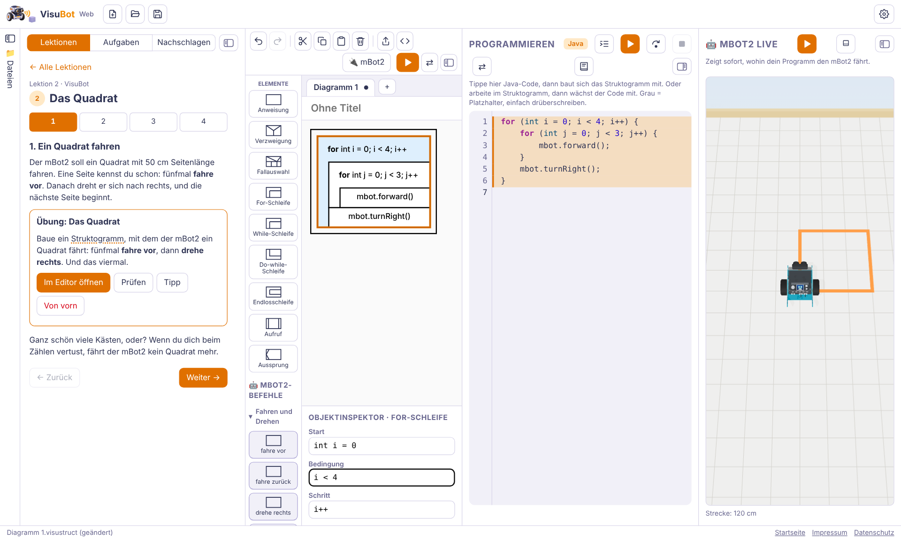

VisuStruct

Struktogramme nach Nassi-Shneiderman im Browser bauen, Schritt für Schritt simulieren und als Java, Python oder JavaScript ausgeben. Mit Lektionen und Aufgaben, auch als App für Mac, iPad und iPhone.
Zu VisuStructKostenlos · im Browser · aus dem Unterricht für den Unterricht
VisuCode bündelt Werkzeuge, mit denen Schülerinnen und Schüler programmieren lernen: erst mit Struktogrammen, dann mit Klassen und Objekten – am Bildschirm, mit dem Roboter mBot2, am Mikrocontroller und im Web.
Ohne Anmeldung und ohne Installation. Deine Dateien bleiben auf deinem Gerät.
Der Lernweg
Wie programmierst du – strukturiert oder objektorientiert? Und wo – am Bildschirm oder mit dem Roboter?
Daneben: VisuMic für Mikrocontroller und VisuWeb für Webdesign.
Die Werkzeuge

Struktogramme nach Nassi-Shneiderman im Browser bauen, Schritt für Schritt simulieren und als Java, Python oder JavaScript ausgeben. Mit Lektionen und Aufgaben, auch als App für Mac, iPad und iPhone.
Zu VisuStruct
Den Lernroboter mBot2 mit Struktogramm oder Java programmieren. Der 3D-Simulator zeigt sofort, wohin er fährt; per USB fährt der echte Roboter mit. 22 Lektionen.
Zu VisuBotObjektorientiertes Programmieren: Klassen mit UML-Diagrammen planen, Beziehungen sehen und den passenden Java-Code daneben entstehen lassen.
Der nächste Schritt nach VisuBot: den mBot2 objektorientiert programmieren – mit eigenen Klassen, Objekten und UML.
Mikrocontroller wie den Raspberry Pi Pico programmieren: LEDs, Sensoren und Motoren steuern, Schritt für Schritt und sichtbar.
Webseiten mit HTML und CSS gestalten und verstehen, wie das Web funktioniert – von der ersten Seite bis zum eigenen Projekt.

Immer dabei
„Ich kaue gern auf schwierigen Sachen herum, bis sie ganz einfach sind. In jedem Visu-Werkzeug erkläre ich dir unterwegs, was Profis wissen.“
Für Lehrkräfte
Alle Werkzeuge entstehen an der Ludwig-Geißler-Schule in Hanau und werden im Informatikunterricht eingesetzt.
Keine Anmeldung, keine Konten, keine Datensammlung. Lernstand und Dateien bleiben auf dem Gerät der Lernenden.
Lernende geben ihren Lernstand als Datei in Moodle ab. Mit dem freien Plugin Quiz Builder entstehen automatisch bewertete Tests.
Die Werkzeuge sind frei nutzbar. Der Quellcode liegt auf GitHub.